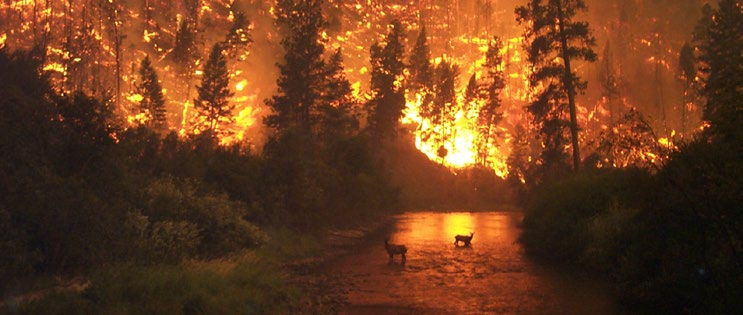
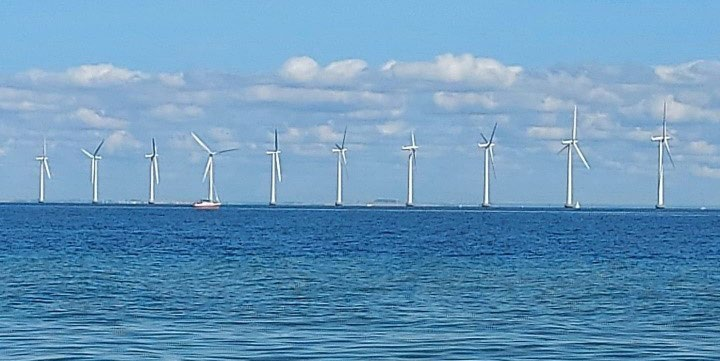
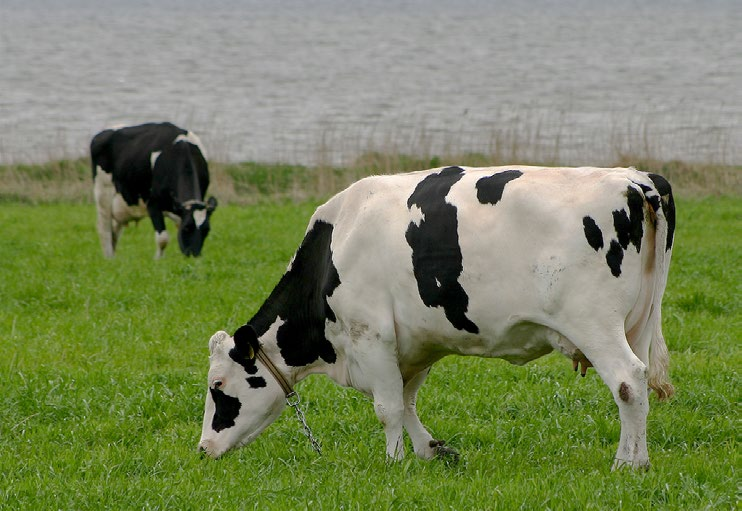

Fakta-ark 26: Klima
Áudio
sidde 142
Fakta-ark 26: Klima
Læremateriale Til Medborgerskabsprøven

sidde 143
Et stort energiforbrug – ved afbrænding af kul, olie og gas (fossile brændsler) – inden for blandt andet produktion og transport har været afgørende for at skabe den store økonomiske vækst de seneste 150 år. Men det har også ført til en stor udledning af CO2 og andre drivhusgasser i atmosfæren. Man taler om drivhus gasser og ’drivhuseffekten’, fordi disse gasser – ligesom et drivhus – på den ene side lukker solens stråler ind, men på den anden side begrænser varmen i at slippe ud igen. Kommer der flere drivhusgasser i atmosfæren, bliver mindre varme lukket ud af atmosfæren igen. Det påvirker klimaet og får temperaturen til at stige, så der sker en global opvarmning. På grund af den globale opvarm ning kan der komme flere områder dækket af ørken, flere oversvømmelser og mere ekstrem varme. Det kan betyde, at mennesker får sværere ved at leve i store dele af verden.
Læremateriale Til Medborgerskabsprøven Fakta-Ark 26: Klima
Dette fakta-ark handler om: • Global opvarmning • Den danske indsats for grøn omstilling
Det er mere end 100 år siden, at man opdagede, at udledning af CO2 kunne give global opvarmning. Men dengang troede man, det først ville blive et problem om tusinder af år. Men det kom til at gå meget hurtigere, og nu ved man, at udled ningen af CO2 og andre drivhusgasser allerede har påvirket vores klima.Skovbrand i USA. Fo
Global Opvarmning – Et Globalt Problem
Skovbrand i USA. Foto: John MacColgan.
Siden perioden 1850-1900 er temperaturen steget globalt med mere end én grad. Historisk er det en stor ændring på lidt over 100 år. Særligt de seneste årtier er det gået stærkt, og udviklingen ser ud til at fortsætte. FN forudser, at klimaet vil blive 1,4 til 4,4 grader varmere i slutningen af dette århundrede, end det var i perioden 1850-1900.
Udviklingen afhænger af, hvor meget udledningerne af drivhusgasser bliver reduceret globalt. De sidste årtier har Danmark gjort meget for at reducere danskernes udledning af drivhusgasser. Det har betydet, at Danmarks udledning
sidde 144
fra 1990 til 2024 er faldet med cirka 53 procent, blandt andet fordi man har fået et mere effektivt energiforbrug, og fordi man bruger mere vindog solenergi.
Læremateriale Til Medborgerskabsprøven Fakta-Ark 26: Klima
Men globalt er udledningen af drivhusgasser steget meget i samme periode – for Jordens befolkning vokser hurtigt, og flere får penge til at købe mere. Det kræver mere produktion, og så lukkes flere drivhusgasser ud i atmosfæren.
Problemet kan derfor kun løses, hvis mange andre lande også reducerer deres udledning, og derfor er et internationalt samarbejde nødvendigt. Verdens lande – ikke mindst i FN – har haft fokus på at løse problemet. Og man har lavet mange internationale aftaler, bl.a. Paris-aftalen i 2015, hvor næsten alle verdens lande har skrevet under på, at de vil være med til at reducere den globale udledning af drivhusgasser over de kommende årtier. Desuden har man aftaler inden for EU med højere ambitioner end Paris-aftalen.
Den Danske Indsats
De sidste år har klima været et vigtigt emne i dansk politik. I 2014 blev Klimarådet oprettet. Det skal rådgive – og vurdere – regeringens klimapolitik og komme med egne anbefalinger. Klimarådet skal i sin rådgivning blandt andet have fokus på, at vi reducerer udledningen af drivhusgasser på en måde, så det ikke koster samfundet for mange penge og arbejdspladser.
I 2019 blev de fleste politiske partier enige om en ny klimalov. I klimaloven står der, at regeringen frem til 2030 skal reducere Danmarks udledning af drivhus gasser med 70 procent i forhold til 1990. Der står også, at Danmark skal være klimaneutral senest i 2050, det vil sige, at man i Danmark ikke må udlede flere drivhusgasser, end man optager. Efter klimaloven blev vedtaget, har Folketinget og regeringen lavet en række aftaler om, hvordan man kan nå målene.
Vejen til at nå disse mål skal gå via en ’grøn omstilling’. Den grønne omstilling handler om at stoppe med at bruge ’sorte’ energikilder som olie og gas, der udleder mange drivhusgasser, og i stedet bruge vedvarende og grønne energi kilder, som for eksempel sol, vind og vandkraft. Disse energikilder kaldes ’vedva rende’, fordi de ikke slipper op, og ’grønne’, fordi de ikke udleder drivhusgasser, eller udleder meget færre drivhusgasser end de sorte energikilder. Vedvarende energi dækkede i 2025 50 procent af energiforbruget i Danmark mod seks procent i 1990.
Af de vedvarende energikilder er især vindenergi vigtig i Danmark, som har haft vindmøller på land siden 1970’erne, og i 1991 fik Danmark verdens første vind møllepark på havet, Vindeby, ud for Lolland. I 2025 producerede vindmøller 52 procent af Danmarks el-forbrug.
Danmark arbejder videre på at udvikle vindenergien. Som det første land i verden har Danmark besluttet at bygge to energiøer som skal opføres i 2030'erne. Den ene energiø skal ligge ved Bornholm. Den anden skal ligge i Nordsøen cirka 80 km fra Jyllands vestkyst. Den kan blive danmarkshistoriens største og dyreste
byggeprojekt. Man kan ikke transportere strøm fra vindmøller over store afstande. Øerne skal derfor opsamle og omdanne energien fra havvindmøllerne, så den kan bruges til transportmidler og til produktion af strøm. Det skal give strøm og varme til mange millioner mennesker i forskellige europæiske lande. Vindmøllepark ved Amager

sidde 145
Læremateriale Til Medborgerskabsprøven Fakta-Ark 26: Klima
Vindmøllepark ved Amager Strand. Foto: Tue Schou Pedersen.
Danmark arbejder også på at få en mere effektiv opvarmning af boliger og på, at bruge grøn energi til denne opvarmning. Man stiller større og større krav til isolering af bygninger for at spare på energiforbruget, og man giver offentlig støtte til, at boligejere gør deres bolig mere klimavenlig, fx til at de udskifter deres olie- eller gasfyr med varmepumper.
Desuden er bilafgifterne blevet indrettet efter, hvor meget bilerne udleder af drivhusgasser. Det er et mål, at der skal være mange flere biler, som kører på elektricitet (elbiler) frem for biler, der kører på benzin eller diesel.
Transporten er et af de områder, hvor Danmark endnu ikke for alvor har redu ceret udledningen af drivhusgasser. Og en omstilling af transporten, blandt andet med mange flere elbiler, er ifølge Klimarådet nødvendig for at nå Danmarks klimamål. Det går dog allerede den rigtige vej, fordi mange danskere nu køber elbiler i stedet for nye benzin- eller dieselbiler.
Europa har tidligere købt meget olie og gas fra Rusland. Importen er dog redu ceret betydeligt siden Ruslands angreb på Ukraine i 2022. Der er også kommet mere fokus på, at den grønne omstilling gør Europa mere uafhængige af blandt andet Rusland.
Udbygningen af vedvarende energi i Europa er steget siden 2022, og Danmark har for eksempel også sammen med flere Nordsølande (Holland, Belgien, Tyskland, Storbritannien, Norge m.fl.) store målsætninger om, at der frem mod 2050 skal bygges rigtig mange nye vindmøller i Nordsøen, der kan skabe rigtig meget energi.

sidde 146
Grøn Trepart
Læremateriale Til Medborgerskabsprøven Fakta-Ark 26: Klima
En del af udslippet af drivhusgasser kommer også fra landbruget, som udgør 60 procent af Danmarks areal. Det gør Danmark til et af de lande i verden, hvor den største andel af jorden er landbrugsjord. Omstilling af landbruget har derfor stor betydning for Danmarks indsats for klimaet.
Med aftalen indfører Danmark også som det første land i verden en direkte afgift på landbrugets udledning af CO2 – den såkaldte "CO2-afgift" – så landmænd skal betale for udledning af CO2 fra deres køer, grise, får, høns og øvrige dyr.Køer på mark i Danmark.
Derfor har regeringen, kommunerne og en række fagforeninger, miljøorgani sationer og organisationer fra erhvervslivet indgået et samarbejde ved navn "Den Grønne Trepart". Parterne bag Den Grønne Trepart aftalte i 2024 en stor og samlet plan for at skabe mere natur i Danmark samt renere vand i søer, åer og i havet. Og for at omstille landbruget, så det forurener mindre.
Det er aftalt, at cirka 15 procent af Danmarks landbrugsjord, som er større end Fyn og Bornholm tilsammen, skal være natur, ved at der plantes ny skov, laves nye moser, sumpe, åer og anden natur.
Køer på mark i Danmark. Foto: Malene Thyssen.
sidde 147
Ordliste
Læremateriale Til Medborgerskabsprøven
sidde 148
Ordliste
Læremateriale Til Medborgerskabsprøven Ordliste
- adgang – mulighed for at komme ind. Adgang til en videregående uddannelse betyder, at man har mulighed for at komme ind på fx en professionshøjskole eller på et universitet, fx fordi man har en eksamen, der giver adgang.
- afgift – penge, man betaler til staten, når man køber eller sælger noget.
- afgørelse – det, at man har bestemt, hvordan noget skal være.
- afgørende – som betyder meget; er meget vigtig.
- afgøre – bestemme. Fx bestemmer domstolene, hvilken straf en kriminel person skal have.
- afhængig, være – ikke kunne leve uden; have brug for.
- afhængigt af – det kommer an på.
- afhøre – stille spørgsmål om, hvad man har lavet.
- afskaffe – holde op med at have.
- afskedsbegæring – dokument, hvor fx en minister beder om lov til at holde op med at være minister.
- afspejle – passe til; være den samme som.
- afsætning – et fag på hhx, der handler virksomhed og markedsføring.
- aktie – andel af ejerskab i en virksomhed. Når man køber en aktie, bliver man med medejer af virksomheden. I store virksomheder er der mange – ofte flere millioner – af aktier. Derfor ejer man kun meget lidt af en virksomhed for hver aktie, man har.
- anerkende – acceptere.
- anke – klage over.
- anskuelse/politisk anskuelse – politisk holdning, ideologi, meninger om samfundet.
- ansættelsesbevis – dokument, der viser, at man er ansat på en bestemt arbejdsplads.
- arbejdskraft – personer der laver et stykke arbejde
- avanceret – højt udviklet
- (etnisk) baggrund – kultur, race eller nationalitet.
- (på den) baggrund – derfor; på grund af det.
- behov for – brug for.
- bemyndigelse – ret til.
- beruset – fuld, som har drukket for meget spiritus.
- besættelse – det, at et land går ind i et andet land med soldater og overtager det og derefter bestemmer over det land, det har taget (besat). I 1940 besatte Tyskland Danmark.
- betingelse – det, at noget kun gælder, hvis noget andet er i orden. Eksempel: Hun laver mad, hvis han køber ind. At han køber ind, er betingelsen for, at hun laver mad.
- bidrage – hjælpe med til noget fælles, fx med arbejde eller penge.
- bistand – hjælp.
- blive udsat for – opleve.
- branche – fag, som hører til et bestemt arbejdsområde, fx byggebranche (fx murer, tømrer, snedker).
- bryde med – holde op med at arbejde sammen med; sige, at man ikke mere vil være en del af noget.
- bøje sig – acceptere et eller andet uden at protestere.
sidde 149
- danskernes nationale identitet – danskernes fælles tanker om, hvad der er vigtigt ved Danmark, og hvad det vil sige at være dansk. For eksempel det danske sprog, kongehuset, demokratiet, velfærdsstaten eller Danmarks natur.
- deltid – når man fx arbejder eller studerer i færre timer per dag, uge, måned eller år end dem som er på fuld tid.
- drive sygehuse – sørge for, at sygehusene fungerer.
- drivhusgasser – luftarter, der er med til at skabe drivhuseffekten, som fx kuldioxid (CO2), Metan (CH4) og Ozon (O3).
- drøftelse – diskussion.
- dyrevelfærd – det, at man sørger for, at dyr er sunde og har det godt.
- dåbsattest – et lille barn får en dåbsattest, når det er blevet døbt i fx folke kirken. På dåbsattesten står der navn og fødselsdag mv.
- dækkes – betales.
- dækket af marker – med korn og andre planter over det hele.
- dækket af – som gælder.
- dække – gælde.
- Døberen, Johannes – Johannes (som på dansk kaldes Hans) var fætter til Jesus og født et halvt år før ham, altså den 24. juni. Johannes var den første, der døbte* mennesker. Derfor blev han kaldt Johannes Døber. Han døbte også Jesus.
- døbe – præsten i en kristen kirke hælder lidt vand på en persons hoved, hvis personen gerne vil være medlem af et kristent trossamfund. Hvis det er et lille barn, får barnet også et navn.
- dåb – det, at præsten i en kristen kirke hælder lidt vand på en persons hoved, hvis personen gerne vil være medlem af et kristent trossamfund. Hvis det er et lille barn, får barnet også et navn under dåben.
- efterforske – undersøge.
- efterkommer – person, som fx hører til en bestemt familie eller en bestemt nationalitet.
- egnede – som kan bruges.
- Eid – en muslimsk højtid.
- eksplosivstof – fx stoffer, der kan eksplodere og gøre skade, ødelægge og dræbe, fx dynamit.
- eksportere, eksport – sælge til udlandet.
- enkeltfag – det, at man tager hf ved at tage ét fag eller nogle få fag ad gangen. Det kan man fx gøre, hvis man er gået ud af skolen efter 9. klasse og har et arbejde, men har lyst til at få en hf, fordi man fx gerne vil ind på en videregå ende uddannelse.
- erklære for egnet til at aftjene værnepligten – få at vide, at man kan bruges som soldat.
- euforiserende stoffer – narkotika, fx hash, kokain, heroin mv.
- falde på – om datoer og ugedage eller måneder: Eksempler: I år falder (= er det) juleaften på en onsdag; i år falder påsken i april.
- Familieretshuset – organisation under staten, der behandler sager om fami lier. Det kan fx være sager om adoption, skilsmisse og forældremyndighed.
- farvand – område med vand fx i et hav, hvor der kan sejle skibe.
- fastetid – en periode, hvor man faster, dvs. slet ikke spiser eller ikke spiser det, man plejer at spise, eller hvor det er forbudt at spise bestemte ting, fx kød.
- fastlægges – bestemmes.
Læremateriale Til Medborgerskabsprøven Ordliste
sidde 150
- fjerne – tage væk.
- FN – De Forenede Nationer (UN – United Nations) en verdensorganisation, der blev dannet efter 2. verdenskrig i 1945 af 51 lande, bl.a. Danmark. FN har i dag (2021) 193 medlemslande.
- folkestyre – demokrati.
- forbedringer – at gøre noget bedre.
- forbyde – gøre forbudt.
- forebygge – at prøve at forhindre noget.
- forening/i forening – sammen, i fællesskab.
- forfatning – grundlæggende (basale) regler for, hvordan en stat skal styres og organiseres. Normalt bliver disse regler skrevet ned i en grundlov.
- forfremme – fx give et bedre arbejde med en højere løn.
- forhandler – laver aftaler med.
- forhindre – så noget ikke sker.
- forlange – sige, at man skal; kræve.
- formue – mange penge.
- forsamling, demokratisk – parlament.
- fortrolig med – som man kender godt.
- forældremyndighed – det, at man som forældre har ret til at bestemme over et barn, indtil barnet bliver myndigt, den dag det fylder 18 år.
- fremme – gøre bedre.
- fremsætte lovforslag – komme med forslag til nye love; foreslå nye love.
- frihedsberøvet – at man sidder i fængsel eller i arresten.
- frugtbarhed – menneskers evne til at få børn, eller jordens evne til at give fx korn, planter eller træer.
- fundamental – basal; grundlæggende.
- fyring – at man får at vide af sin chef, at man har mistet sit arbejde.
- føre ud i livet – gennemføre; realisere; gøre virkelig.
- gebyr – penge, som man betaler til fx en offentlig myndighed, som fx laver et dokument til én.
- ghettokvarter – boligområde, hvor udlændinge fra ikke-vestlige lande udgør over halvdelen af befolkningen og med mange problemer, fx arbejdsløshed, kriminalitet eller lav indkomst og lav uddannelse.
- gigant – noget, der er meget stort.
- global opvarmning – ændring i jordens klima på grund af stigningen i den gennemsnitlige temperatur.
- godkendelse – dokument, hvor der står, at noget opfylder nødvendige (ofte juridiske) krav, dvs. opfylder bestemte regler.
- gribe ind – at blande sig, forhindre.
- grundskolen – i grundskolen undervises der i de grundlæggende (basale) fag, fx læsning, skrivning og regning.
- Gudstjeneste – når man samles i kirken – typisk på en søndag – for at ære gud. Der synges salmer og præsten taler om Biblen og kristendommen.
- hadforbrydelser – forbrydelser, fx vold, hærværk eller trusler, motiveret af had til personer på grund af deres religion, politiske holdning, hudfarve, køn, etnicitet, seksuelle orientering, alder mv.
- handle – at gøre noget.
- hedensk – ingen eller anden religion end kristendom, islam eller jødedom.
Læremateriale Til Medborgerskabsprøven Ordliste
sidde 151
- Helligånden – i kristendommen mener man, at Gud består af tre dele: Faderen (Gud), Sønnen (Jesus Kristus) og Helligånden. Disse tre kaldes også Treenigheden (= tre i én).
- hemmelige/frie og hemmelige valg – alle kan stille op til valget, og ingen kan se, hvem eller hvilket parti man stemmer på.
- husmand – bonde, der ejer meget lidt eller ingen jord.
- højtid – et tidspunkt på én eller flere dage, hvor man fx holder en religiøs fest.
- håne – gøre grin med og nedgøre nogen med respektløse, hadefulde ord.
- importere, import – købe i udlandet.
- indflydelse – være med til at bestemme.
- indgå – være en del af.
- indkaldt – at få at vide, at man skal møde op til noget bestemt.
- indtægter – penge man tjener.
- injurier – det at sige noget negativt og forkert om andre.
- iværksætte – starte; sætte gang i.
- juletræ – grantræ, som man tager ind i stuen og pynter.
- kapel – siderum i en kirke, som bruges til særlige ting.
- kapitulation – det, at man holder op med at kæmpe under fx en krig, når man kan mærke, at man er ved at tabe.
- kaserne – hvor soldater i en hær bor, og våben opbevares.
- knytte sammen – binde sammen.
- kollektiv – som gælder for alle.
- konfirmation – det, at døbte børn på ca. 14 år kommer hen i kirken og siger ja til, at de er medlem af det evangelisk-lutherske trossamfund (= den danske folkekirke).
- konsekvens – resultat.
- kontingent – penge, man betaler for at være medlem af fx en forening.
- korsfæste – henrette en person ved at hænge vedkommende op på et kors.
- krav – det, som er nødvendigt at gøre.
- krigsbytte – ting, som krigere har taget fra dem, de er i krig med, eller som de har røvet fra folk.
- krænke – ikke respektere.
- kræve – siger at man skal have noget (ændret).
- lag – gruppe af personer, som har nogenlunde det samme sociale niveau (fx nogenlunde samme slags uddannelse, samme slags arbejde, samme økonomi).
- ledsager – en anden person, som er med og kan hjælpe.
- ligestilling – at folk har lige rettigheder og muligheder, uanset om de er mænd, kvinder, homoseksuelle m.v.
- ligeværd – det, at alle er lige meget værd.
- markedsøkonomi – når varer og tjenester produceres, købes og sælges frit af private virksomheder.
- Masseødelæggelsesvåben – våben, der kan ramme hele befolkninger, dvs. kemiske, biologiske, radioaktive og nukleare våben.
- medicinalvirksomhed – en virksomhed, der udvikler og sælger medicin.
- menighed – organiseret fællesskab, hvor alle har den samme slags religion. Det kan også være en mindre del af det organiserede fællesskab.
- mentor – vejleder.
Læremateriale Til Medborgerskabsprøven Ordliste
sidde 152
- midsommervisen – en bestemt sang, som handler om midsommer (23. juni = midt om sommeren).
- mistanke – det at tro, at nogen har gjort noget forbudt.
- myndighederne – det offentlige (stat og kommune).
- mørklægningsgardiner – sorte eller meget mørke gardiner, som man dækker vinduerne med, så der ikke kan komme lys ud. Man brugte mørklægnings gardiner under 2. verdenskrig under luftangreb. Så kunne man fra flyene ikke se, hvor der var huse og byer.
- nederlag – at tabe, fx en krig.
- nedrustning – når et land reducerer størrelsen af sit militær
- nedlagt – lukket. nedlægge veto – sige nej.
- neutralitetspolitik – når et land ikke deltager eller vælger side i andre landes krige og konflikter.
- niche – en afgrænset del af et marked, et specielt område inden for handel med varer.
- notere – skrive.
- nægte – sige nej.
- nær ven – god ven.
- offentlige steder – hvor alle har lov at være.
- omfang/et vist omfang – til en vis grad.
- omfang/i vidt omfang – i høj grad.
- omfattende – store.
- opbakning – støtte.
- opgive – fortælle. Man skal fortælle skattevæsnet, hvor mange penge man har tjent.
- oplyse – fortælle.
- opretholde – sørge for at noget fortsætter.
- oprette – starte.
- oprindeligt – i begyndelsen.
- oprustning – når et land forbedrer sit militær for eksempel ved at skaffe flere soldater og bedre våben
- opsigelsesvarsel – det, at man skal have en skriftlig besked om, at man ikke mere har arbejde på en arbejdsplads, at man er fyret/opsagt. Man skal have besked, et stykke tid før man bliver fyret, fx tre måneder før.
- opstille en kandidat – vælge en person, der skal prøve at blive valgt ind i Folke tinget ved et folketingsvalg.
- opstille – melde sig for fx at prøve at blive valgt ind i Folketinget ved et folke tingsvalg.
- opstå fra de døde – blive levende igen.
- opsyn/holde under opsyn – passe på; holde øje med.
- optage nogen – tage nogen ind på en skole eller en uddannelse.
- ordblind – som har problemer med at læse og skrive, bl.a. på grund af medfødte problemer med at gå fra bogstav til lyd på en systematisk måde.
- overbevisning – det, at man tror fast på noget.
- overenskomst – skriftlig aftale mellem to parter / kollektiv overenskomst – aftale, som gælder for alle.
- overordnede politiske retningslinjer – generelle politiske principper.
- overskud – det, at man har tjent flere penge, end man har brugt på sin virk somhed.
Læremateriale Til Medborgerskabsprøven Ordliste
sidde 153
- overvåge – holde øje med.
- planøkonomi – når staten planlægger og bestemmer, hvilke varer og tjenester, der produceres.
- professionsbachelor – en mellemlang uddannelse (normalt 2-4 år), der giver mulighed for, at man kan få et bestemt job, fx som lærer eller som syge plejerske.
- professionshøjskole – en uddannelsesinstitution, hvor man kan tage en mellemlang uddannelse som fx lærer eller sygeplejerske.
- præge – påvirke.
- præget af – karakteriseret af.
- pårørende – familiemedlemmer.
- påvirke – gøre noget, som betyder, at der sker noget med nogle andre eller noget andet. Fx påvirker mennesker naturen ved at køre i bil. Det betyder måske, at naturen fx bliver forurenet. Og det betyder måske igen, at menne sker bliver syge.
- racismeparagraffen – del af lov, hvor der står, at man ikke offentligt må tale grimt om folk pga. deres race.
- rammer – regler for, hvordan fx samfundet eller en institution skal være, dvs. fx hvad man må og ikke må.
- redegøre – forklare.
- regulere – kontrollere ved hjælp af love og regler.
- relationer – kontakt med andre mennesker, fx familie, venner og kolleger.
- relevant – som er vigtigt for det, man gerne vil. Hvis man fx gerne vil være læge, er den relevante uddannelse, at man læser medicin på universitetet.
- ressource – et forråd af ting eller materialer, som er vigtige for fx økonomien.
- retlig – som har med love og regler at gøre.
- Rigsfællesskabet eller Det Danske Rigsfællesskab – Danmark, Færøerne og Grønland. Rigsfællesskabet hører under Kongeriget Danmark, hvor alle tre regioner indgår i et konstitutionelt monarki. Der er noget, de tre dele er fælles om. Fx er de tre dele fælles om dronningen. Der er også mange ting, de tre dele ikke er fælles om. Fx har hver af de tre dele eget flag.
- rådighed, stille til – give ret til at bruge; forære.
- rødstrømpebevægelse – en socialistisk bevægelse i 70’erne, der kæmpede for kvinders rettigheder.
- saglig grund – en god grund, der handler om noget, andre også kan se og forstå.
- sammenslutning – forening.
- skolebestyrelse – forældrene til børnene på en skole vælger hvert 4. år fem til syv forældre til at være i skolens bestyrelse, hvor der også er nogle lærere og nogle børn fra skolen. Skolebestyrelsen bestemmer fx, hvordan undervis ningen skal organiseres, hvor mange timer børnene skal have på de forskel lige klassetrin (0.-9./10. klasse) og hvor mange forældremøder og udflugter der skal være.
- sprængstoffer – noget materiale, som kan eksplodere, fx dynamit.
- spænde et sikkerhedsnet ud – sørge for at alle, der har brug for det, fx har et sted at bo og mad at spise.
- stille op – melde sig for fx at prøve at blive valgt som fx tillidsrepræsentant.
- strafbart – handlinger som kan straffes, fx med en bøde eller fængsel.
Læremateriale Til Medborgerskabsprøven Ordliste
sidde 154
- streame – se eller lytte til indhold, som film, serier, musik eller podcasts, direkte over internettet, uden at downloade det til sin mobiltelefon, tablet eller computer.
- strid/i strid med – som man ikke må sige eller gøre fx ifølge en lov.
- styrke – gøre bedre; gøre stærkere. Styrke dialogen mellem skole og hjem: Sørge for, at lærerne og forældrene taler godt/bedre med hinanden.
- særstilling – det at være noget særligt. tale/være tale om – handle om. tilgæn gelig – som er let at finde; få fat i.
- territorium – landområde.
- tilhold – en person forbydes at opsøge, kontakte eller følge efter en anden person.
- tilknyttet – som har meget eller lidt arbejde et bestemt sted. Der er tilknyttet en jordemoder til sundhedscentret: en eller flere gange om ugen er der en jordemoder i sundhedscentret.
- tillægge betydning – mene, at noget er vigtigt.
- tilskud – penge, som man får fra det offentlige som hjælp til at betale for udgifter. Et tilskud er normalt kun en del af det, noget koster.
- tilslutning – støtte.
- togt – rejse til et eller flere steder for fx at røve eller føre krig.
- tolke – forklare, hvad noget betyder.
- trivsel – det, at man har det godt; at man trives.
- trossamfund – organiseret fællesskab, hvor alle har den samme slags religion.
- trussel – noget, som kan blive farligt.
- trække en grænse – lave en grænse.
- tvinge – sige, at nogen skal gøre noget; sige, at noget er en pligt.
- typisk – normalt.
- uafhængigt af – uden at tænke på.
- udgifter – penge man bruger.
- udgøre – være.
- udnævne – officielt give nogen en opgave.
- udsat for en forbrydelse – at nogen gør noget mod én som er ulovligt.
- udskrive skat – give besked om, hvor meget folk skal betale i skat.
- uformel – på en afslappet og dagligdags måde.
- umyndiggjort – som har mistet de rettigheder, som voksne, myndige personer over 18 år har. Det kan fx ske, hvis en person er meget alvorligt psykisk syg.
- underskud – det, at man har tjent færre penge, end man har brugt på sin virksomhed.
- understøtte – hjælpe, fx med penge.
- undertrykke – gøre det svært for folk at leve, som de gerne vil.
- Undervisningsministeriet – det ministerium, der har at gøre med undervisning og uddannelse af børn, unge og nogle grupper af voksne.
- undtagelse – noget, som en regel eller lov ikke gælder for.
- ungdomsårgang – en årgang er en gruppe personer, der er født det samme år, fx alle personer, der er født i 1987. En ungdomsårgang er en gruppe unge, der er gået ud af skolen det samme år, fx 2014.
- varig – som aldrig holder op.
- varsel – normalt bliver man ikke fyret fra dag til dag. Man får besked (varsel) om det et stykke tid før, fx nogle måneder.
- vedligeholde – sørge for, at fx huse bliver repareret, når de trænger til det.
Læremateriale Til Medborgerskabsprøven Ordliste
sidde 155
- vedrørende – som angår.
- vedrøre – angå, handle om.
- vedtage – bestemme, at noget skal gælde.
- veldrevne – som fungerer godt, som har en god ledelse.
- velfærdsydelse – penge, ting eller hjælp, man får som borger i velfærdssam fundet, for at man kan have et godt liv. Det kan fx være gratis skolegang, læge hjælp og pension.
- velfærd – det at have det godt, fordi man ved, at man ikke kan komme til at mangle hjælp (fx penge eller ting), hvis man får brug for det. Dvs., at man som borger i velfærdssamfundet fx kan få gratis skolegang, lægehjælp og pension.
- velstand – rigdom, hvor mange penge man har.
- venstreorienteret – fx socialist, socialdemokrat eller kommunist.
- vidne/være vidne til – se, at noget sker.
- vilkår/samme vilkår – samme betingelser*.
- voldelig – som bruger fysisk vold, fx slår.
- våbenkapløb – når to eller flere lande konkurrerer om at have flest og bedst våben.
- vægt/lægge vægt på – mene, at noget er vigtigt.
- værnepligt – pligt til at være soldat.
- ydelse – penge, ting eller tjeneste, man får eller giver, fx som hjælp.
- ytring – det, man siger.
- øge – gøre større.
- økonomisk vækst – når et land bliver rigere.
- åndsfrihed – frihed til at tænke og mene, hvad man vil, dvs. retten til selv at bestemme, hvad man vil tro på, og hvad man vil mene.
- årgang – er en gruppe personer, der er født det samme år, fx alle personer, der er født i 1987. En ungdomsårgang er en gruppe unge, der er gået ud af skolen det samme år, fx 2014.
Læremateriale Til Medborgerskabsprøven Ordliste
www.danskogproever.dk
Fonte: Læremateriale til Medborgerskabsprøven, SIRI.